library(knitr) # compiling .qmd files
library(pander) # format tables for markdown
library(ggplot2) # graphics
library(ggeasy) # help with graphics:
# - `ggeasy::easy_labs()` applies same logic as `ggplot2::labs()` but uses as default the "label" attribute, if present, as the variable label in the plot."
library(dplyr) # manipulate data
library(haven) # import Stata files
library(tidyr) # Tools to help to create tidy data
library(plotly) # interactive graphics
library(dobson) # datasets from Dobson and Barnett 2018
library(parameters) # format model output tables for markdown
library(conflicted) # check for conflicting function definitions
library(magrittr) # `%>%` and other additional piping tools2 Linear (Gaussian) Models
Note
This content is adapted from:
- Dobson and Barnett (2018), Chapters 2-6
- Dunn, Smyth, et al. (2018), Chapters 2-3
- Vittinghoff et al. (2012), Chapter 4
There are numerous textbooks specifically for linear regression, including:
- Kutner et al. (2005): used for UCLA Biostatistics MS level linear models class
- Chatterjee and Hadi (2015): used for Stanford MS-level linear models class
- Seber and Lee (2012): used for UCLA Biostatistics PhD level linear models class
- Kleinbaum et al. (2014): same first author as Kleinbaum and Klein (2010) and Kleinbaum and Klein (2012)
Functions from these packages will be used throughout this document:
2.1 Overview
2.1.1 Why this course includes linear regression
- This course is about generalized linear models (for non-Gaussian outcomes)
- UC Davis STA 108 (“Applied Statistical Methods: Regression Analysis”) is a prerequisite for this course, so everyone here should have some understanding of linear regression already.
- We will review linear regression to:
- make sure everyone is caught up
- to provide an epidemiological perspective on model intepretation.
2.1.2 Chapter overview
Section 2.2: how to interpret linear regression models
Section 2.3: how to estimate linear regression models
Section 2.4: how to quantify uncertainty about our estimates
Section 2.8: how to tell if your model is insufficiently complex
2.2 Understanding Gaussian Linear Regression Models
2.2.1 Motivating example: birthweights and gestational age
Suppose we want to learn about the distributions of birthweights (outcome \(Y\)) for (human) babies born at different gestational ages (covariate \(A\)) and with different chromosomal sexes (covariate \(S\)) (Dobson and Barnett (2018) Example 2.2.2).
birthweight data (Dobson and Barnett (2018) Example 2.2.2)
| boys gestational age | boys weight | girls gestational age | girls weight |
|---|---|---|---|
| 40 | 2968 | 40 | 3317 |
| 38 | 2795 | 36 | 2729 |
| 40 | 3163 | 40 | 2935 |
| 35 | 2925 | 38 | 2754 |
| 36 | 2625 | 42 | 3210 |
| 37 | 2847 | 39 | 2817 |
| 41 | 3292 | 40 | 3126 |
| 40 | 3473 | 37 | 2539 |
| 37 | 2628 | 36 | 2412 |
| 38 | 3176 | 38 | 2991 |
| 40 | 3421 | 39 | 2875 |
| 38 | 2975 | 40 | 3231 |
Show R code
bw =
birthweight |>
pivot_longer(
cols = everything(),
names_to = c("sex", ".value"),
names_sep = "s "
) |>
rename(age = `gestational age`) |>
mutate(
sex = sex |>
case_match(
"boy" ~ "male",
"girl" ~ "female") |>
factor(levels = c("female", "male")))
bwbirthweight data reshaped
Show R code
plot1 = bw |>
ggplot(aes(
x = age,
y = weight,
linetype = sex,
shape = sex,
col = sex)) +
theme_bw() +
xlab("Gestational age (weeks)") +
ylab("Birthweight (grams)") +
theme(legend.position = "bottom") +
# expand_limits(y = 0, x = 0) +
geom_point(alpha = .7)
print(plot1 + facet_wrap(~ sex))birthweight data (Dobson and Barnett (2018) Example 2.2.2)

Data notation
Let’s define some notation to represent this data.
\(Y\): birthweight (measured in grams)
\(S\): chromosomal sex: “male” (XY) or “female” (XX)
\(M\): indicator variable for \(S\) = “male”1
\(M = 0\) if female (XX)
\(M = 1\) if male (XY)
\(F\): indicator variable for \(S\) = “female”2
\(F = 1\) if female (XX)
\(F = 0\) if male (XY)
\(A\): estimated gestational age at birth (measured in weeks).
Note
Female is the reference level for the categorical variable \(S\) (chromosomal sex) and corresponding indicator variable \(M\) . The choice of a reference level is arbitrary and does not limit what we can do with the resulting model; it only makes it more computationally convenient to make inferences about comparisons involving that reference group.
2.2.2 Parallel lines regression
We don’t have enough data to model the distribution of birth weight separately for each combination of gestational age and sex, so let’s instead consider a (relatively) simple model for how that distribution varies with gestational age and sex:
\[p(Y=y|A=a,S=s) \ \sim_{\text{iid}}\ N(\mu(a,s), \sigma^2)\]
\[ \begin{aligned} \mu(a,s) &\stackrel{\text{def}}{=}\mathbb{E}\left[Y|A=a, S=s\right] \\ &= \beta_0 + \beta_A a+ \beta_M m \end{aligned} \tag{2.1}\]
Table 2.3 shows the parameter estimates from R. Figure 2.2 shows the estimated model, superimposed on the data.
Show R code
bw_lm1 = lm(
formula = weight ~ sex + age,
data = bw)
bw_lm1 |>
parameters() |>
print_md(
include_reference = TRUE,
# show_sigma = TRUE,
select = "{estimate}")birthweight data
| Parameter | Estimate |
|---|---|
| (Intercept) | -1773.32 |
| sex (female) | 0.00 |
| sex (male) | 163.04 |
| age | 120.89 |

Model assumptions and predictions
To learn what this model is assuming, let’s plug in a few values.
Exercise 2.1 According to this model, what’s the mean birthweight for a female born at 36 weeks?
Show R code
coef(bw_lm1)
#> (Intercept) sexmale age
#> -1773.32184 163.03930 120.89433Solution.
\[ \begin{aligned} E[Y|A = 0, A = 36] &= \beta_0 + \beta_M \cdot 0+ \beta_A \cdot 36 \\ &= 2578.873934 \end{aligned} \]
Exercise 2.2 What’s the mean birthweight for a male born at 36 weeks?
Show R code
coef(bw_lm1)
#> (Intercept) sexmale age
#> -1773.3 163.0 120.9Solution.
\[ \begin{aligned} E[Y|A = 1, A = 36] &= \beta_0 + \beta_M \cdot 1+ \beta_A \cdot 36 \\ &= 2741.91323693 \end{aligned} \]
Exercise 2.3 What’s the difference in mean birthweights between males born at 36 weeks and females born at 36 weeks?
Show R code
coef(bw_lm1)
#> (Intercept) sexmale age
#> -1773.3 163.0 120.9Solution. \[ \begin{aligned} & E[Y|M = 1, A = 36] - E[Y|M = 0, A = 36]\\ &= 2741.91323693 - 2578.873934\\ &= 163.03930293 \end{aligned} \]
Shortcut:
\[ \begin{aligned} & E[Y|A = 1, A = 36] - E[Y|A = 0, A = 36]\\ &= (\beta_0 + \beta_M \cdot 1+ \beta_A \cdot 36) - (\beta_0 + \beta_M \cdot 0+ \beta_A \cdot 36) \\ &= \beta_M \\ &= 163.03930293 \end{aligned} \]
Note that age doesn’t show up in this difference: in other words, according to this model, the difference between females and males with the same gestational age is the same for every age.
That’s an assumption of the model; it’s built-in to the parametric structure, even before we plug in the estimated values of those parameters.
That’s why the lines are parallel.
2.2.3 Interactions
What if we don’t like that parallel lines assumption?
Then we need to allow an “interaction” between age \(A\) and sex \(S\):
\[ E[Y|A=a, S=s] = \beta_0 + \beta_A a+ \beta_M m + \beta_{AM} (a \cdot m) \tag{2.2}\]
Now, the slope of mean birthweight \(E[Y|A,S]\) with respect to gestational age \(A\) depends on the value of sex \(S\).
Show R code
bw_lm2 = lm(weight ~ sex + age + sex:age, data = bw)
bw_lm2 |>
parameters() |>
print_md(
include_reference = TRUE,
# show_sigma = TRUE,
select = "{estimate}")| Parameter | Estimate |
|---|---|
| (Intercept) | -2141.67 |
| sex (female) | 0.00 |
| sex (male) | 872.99 |
| age | 130.40 |
| sex (male) × age | -18.42 |

Now we can see that the lines aren’t parallel.
Here’s another way we could rewrite this model (by collecting terms involving \(S\)):
\[ E[Y|A, M] = \beta_0 + \beta_M M+ (\beta_A + \beta_{AM} M) A \]
Note
If you want to understand a coefficient in a model with interactions, collect terms for the corresponding variable, and you will see what other variables are interacting with the variable you are interested in.
In this case, the coefficient \(S\) is interacting with \(A\). So the slope of \(Y\) with respect to \(A\) depends on the value of \(M\).
According to this model, there is no such thing as “the slope of birthweight with respect to age”. There are two slopes, one for each sex.3 We can only talk about “the slope of birthweight with respect to age among males” and “the slope of birthweight with respect to age among females”.
Then: that coefficient is the difference in means per unit change in its corresponding coefficient, when the other collected variables are set to 0.
To learn what this model is assuming, let’s plug in a few values.
Exercise 2.4 According to this model, what’s the mean birthweight for a female born at 36 weeks?
Solution.
\[ E[Y|A = 0, X_2 = 36] = \beta_0 + \beta_M \cdot 0+ \beta_A \cdot 36 + \beta_{AM} \cdot (0 * 36) = 2552.73333333 \]
Exercise 2.5 What’s the mean birthweight for a male born at 36 weeks?
Solution.
\[ \begin{aligned} E[Y|A = 0, X_2 = 36] &= \beta_0 + \beta_M \cdot 1+ \beta_A \cdot 36 + \beta_{AM} \cdot 1 \cdot 36\\ &= 2762.70689655 \end{aligned} \]
Exercise 2.6 What’s the difference in mean birthweights between males born at 36 weeks and females born at 36 weeks?
Solution. \[ \begin{aligned} & E[Y|M = 1, A = 36] - E[Y|M = 0, A = 36]\\ &= (\beta_0 + \beta_M \cdot 1+ \beta_A \cdot 36 + \beta_{AM} \cdot 1 \cdot 36)\\ &\ \ \ \ \ -(\beta_0 + \beta_M \cdot 0+ \beta_A \cdot 36 + \beta_{AM} \cdot 0 \cdot 36) \\ &= \beta_{S} + \beta_{AM}\cdot 36\\ &= 209.97356322 \end{aligned} \]
Note that age now does show up in the difference: in other words, according to this model, the difference in mean birthweights between females and males with the same gestational age can vary by gestational age.
That’s how the lines in the graph ended up non-parallel.
2.2.4 Stratified regression
We could re-write the interaction model as a stratified model, with a slope and intercept for each sex:
\[ \mathbb{E}\left[Y|A=a, S=s\right] = \beta_M m + \beta_{AM} (a \cdot m) + \beta_F f + \beta_{AF} (a \cdot f) \tag{2.3}\]
Compare this stratified model with our interaction model, Equation 2.2:
\[ \mathbb{E}\left[Y|A=a, S=s\right] = \beta_0 + \beta_A a + \beta_M m + \beta_{AM} (a \cdot m) \]
In the stratified model, the intercept term \(\beta_0\) has been relabeled as \(\beta_F\).
Show R code
bw_lm2 = lm(weight ~ sex + age + sex:age, data = bw)
bw_lm2 |>
parameters() |>
print_md(
include_reference = TRUE,
# show_sigma = TRUE,
select = "{estimate}")| Parameter | Estimate |
|---|---|
| (Intercept) | -2141.67 |
| sex (female) | 0.00 |
| sex (male) | 872.99 |
| age | 130.40 |
| sex (male) × age | -18.42 |
Show R code
bw_lm_strat =
bw |>
lm(
formula = weight ~ sex + sex:age - 1,
data = _)
bw_lm_strat |>
parameters() |>
print_md(
# show_sigma = TRUE,
select = "{estimate}")| Parameter | Estimate |
|---|---|
| sex (female) | -2141.67 |
| sex (male) | -1268.67 |
| sex (female) × age | 130.40 |
| sex (male) × age | 111.98 |
2.2.5 Curved-line regression
If we transform some of our covariates (\(X\)s) and plot the resulting model on the original covariate scale, we end up with curved regression lines:
Show R code
bw_lm3 = lm(weight ~ sex:log(age) - 1, data = bw)
library(palmerpenguins)
ggpenguins <-
palmerpenguins::penguins |>
dplyr::filter(species == "Adelie") |>
ggplot(
aes(x = bill_length_mm , y = body_mass_g)) +
geom_point() +
xlab("Bill length (mm)") +
ylab("Body mass (g)")
ggpenguins2 = ggpenguins +
stat_smooth(
method = "lm",
formula = y ~ log(x),
geom = "smooth") +
xlab("Bill length (mm)") +
ylab("Body mass (g)")
ggpenguins2 |> print()palmerpenguins model with bill_length entering on log scale

2.3 Estimating Linear Models via Maximum Likelihood
2.3.1 Likelihood, log-likelihood, and score functions for linear regression
In EPI 203 and [intro-MLEs.qmd#sec-intro-MLEs], we learned how to fit outcome-only models of the form \(p(X=x|\theta)\) to iid data \(\mathbf x = (x_1,…,x_n)\) using maximum likelihood estimation.
Now, we apply the same procedure to linear regression models:
\[ \mathcal L(\tilde{y}|\mathbf{x},\beta, \sigma^2) = \prod_{i=1}^n (2\pi\sigma^2)^{-1/2} \text{exp}\left\{-\frac{1}{2\sigma^2}(y_i - \tilde{x_i}'\beta)^2\right\} \tag{2.4}\]
\[ \ell(\tilde{y}|\mathbf{x},\beta, \sigma^2) = -\frac{n}{2}\text{log}\left\{\sigma^2\right\} - \frac{1}{2\sigma^2}\sum_{i=1}^n (y_i - \tilde{x_i}' \beta)^2 \tag{2.5}\]
\[ \ell'_{\beta}(\tilde{y}|\mathbf{x},\beta, \sigma^2) = - \frac{1}{2\sigma^2}\frac{d}{d\beta} \left(\sum_{i=1}^n (y_i - \tilde{x_i}' \beta)^2\right) \tag{2.6}\]
2.3.2 Some tools from vector calculus
A few tools from linear algebra will make this analysis go easier (see Fieller (2016), Section 7.2 for details).
\[ f_{\beta}(\mathbf x) = (f_{\beta}(x_1), f_{\beta}(x_2), ..., f_{\beta}(x_n))^\top \]
Let \(\mathbf x\) and \(\beta\) be vectors of length \(p\), or in other words, matrices of length \(p\times 1\):
\[ x = \begin{bmatrix} x_{1} \\ x_{2} \\ \vdots \\ x_{p} \end{bmatrix} \\ \beta = \begin{bmatrix} \beta_{1} \\ \beta_{2} \\ \vdots \\ \beta_{p} \end{bmatrix} \]
Then
\[ x' \equiv x^\top \equiv [x_1, x_2, ..., x_p] \]
and
\[ x'\beta = [x_1, x_2, ..., x_p] \begin{bmatrix} \beta_{1} \\ \beta_{2} \\ \vdots \\ \beta_{p} \end{bmatrix} = x_1\beta_1+x_2\beta_2 +...+x_p \beta_p \]
If \(f(\beta)\) is a function that takes \(\beta\) as input and outputs a scalar, such as \(f(\beta) = x'\beta\), then:
\[ \frac{d}{d \beta} f(\beta)= \begin{bmatrix} \frac{d}{d\beta_1}f(\beta) \\ \frac{d}{d\beta_2}f(\beta) \\ \vdots \\ \frac{d}{d\beta_p}f(\beta) \end{bmatrix} \]
In particular, if \(f(\beta) = x'\beta\), then:
\[ \frac{d}{d \beta} x'\beta= \begin{bmatrix} \frac{d}{d\beta_1}(x_1\beta_1+x_2\beta_2 +...+x_p \beta_p ) \\ \frac{d}{d\beta_2}(x_1\beta_1+x_2\beta_2 +...+x_p \beta_p ) \\ \vdots \\ \frac{d}{d\beta_p}(x_1\beta_1+x_2\beta_2 +...+x_p \beta_p ) \end{bmatrix} = \begin{bmatrix} x_{1} \\ x_{2} \\ \vdots \\ x_{p} \end{bmatrix} = \mathbf x \]
In general:
\[ \frac{d}{d\beta} x'\beta = x \]
This looks a lot like non-vector calculus, except that you have to transpose the coefficient.
Similarly,
\[ \frac{d}{d\beta} \beta'\beta = 2\beta \]
This is like taking the derivative of \(x^2\).
And finally, if \(S\) is a \(p\times p\) matrix, then:
\[ \frac{d}{d\beta} \beta'S\beta = 2S\beta \]
Again, this is like taking the derivative of \(cx^2\) with respect to \(x\) in non-vector calculus.
Thus:
\[ \sum_{i=1}^n (y_i - f_\beta(x_i))^2 = (\mathbf y - X\beta)'(\mathbf y - X\beta) \]
\[ (\mathbf y - X\beta)' = (\mathbf y' - (X\beta)') = (\mathbf y' - \beta'X') \]
So
\[ \begin{aligned} (\mathbf y - X\beta)'(\mathbf y - X\beta) &= (\mathbf y' - \beta'X')(\mathbf y - X\beta)\\ &= y'y - \beta'X'y - y'X\beta +\beta'X'X\beta\\ &= y'y - 2y'X\beta +\beta'X'X\beta \end{aligned} \]
2.3.3 Analyzing the linear regression score function
\[ \begin{aligned} \frac{d}{d\beta}\left( \sum_{i=1}^n (y_i - x_i' \beta)^2\right) &= \frac{d}{d\beta}(\mathbf y - X\beta)'(\mathbf y - X\beta)\\ &= \frac{d}{d\beta} (y'y - 2y'X\beta +\beta'X'X\beta)\\ &= (- 2X'y +2X'X\beta) \end{aligned} \]
So if \(\ell(\beta,\sigma^2) =0\), then
\[ \begin{aligned} 0 &= (- 2X'y +2X'X\beta)\\ 2X'y &= 2X'X\beta\\ X'y &= X'X\beta\\ (X'X)^{-1}X'y &= \beta \end{aligned} \]
The second derivative matrix \(\ell_{\beta, \beta'} ''(\beta, \sigma^2;\mathbf X,\mathbf y)\) is negative definite at \(\beta = (X'X)^{-1}X'y\), so \(\hat \beta_{ML} = (X'X)^{-1}X'y\) is the MLE for \(\beta\).
Similarly (not shown):
\[ \hat\sigma^2_{ML} = \frac{1}{n} (Y-X\hat\beta)'(Y-X\hat\beta) \]
And
\[ \begin{aligned} \mathcal I_{\beta} &= E[-\ell_{\beta, \beta'} ''(Y|X,\beta, \sigma^2)]\\ &= \frac{1}{\sigma^2}X'X \end{aligned} \]
So:
\[ Var(\hat \beta) \approx (\mathcal I_{\beta})^{-1} = \sigma^2 (X'X)^{-1} \]
and
\[ \hat\beta \dot \sim N(\beta, \mathcal I_{\beta}^{-1}) \]
These are all results you have hopefully seen before.
In the Gaussian linear regression case, we also have exact results:
\[ \frac{\hat\beta_j}{\hat{\text{se}}\left(\hat\beta_j\right)} \ \sim \ t_{n-p} \]
In our model 2 above, \(\hat{\mathcal{I}}(\beta)\) is:
Show R code
bw_lm2 |> vcov()
#> (Intercept) sexmale age sexmale:age
#> (Intercept) 1353968 -1353968 -34871.0 34871.0
#> sexmale -1353968 2596387 34871.0 -67211.0
#> age -34871 34871 899.9 -899.9
#> sexmale:age 34871 -67211 -899.9 1743.5If we take the square roots of the diagonals, we get the standard errors listed in the model output:
Show R code
bw_lm2 |> parameters() |> print_md()birthweight data with interaction term
| Parameter | Coefficient | SE | 95% CI | t(20) | p |
|---|---|---|---|---|---|
| (Intercept) | -2141.67 | 1163.60 | (-4568.90, 285.56) | -1.84 | 0.081 |
| sex (male) | 872.99 | 1611.33 | (-2488.18, 4234.17) | 0.54 | 0.594 |
| age | 130.40 | 30.00 | (67.82, 192.98) | 4.35 | < .001 |
| sex (male) × age | -18.42 | 41.76 | (-105.52, 68.68) | -0.44 | 0.664 |
So we can do confidence intervals, hypothesis tests, and p-values exactly as in the one-variable case we looked at previously.
2.3.4 Residual Standard Deviation
\(\hat\sigma\) represents an estimate of the Residual Standard Deviation parameter, \(\sigma\). We can extract \(\hat\sigma\) from the fitted model, using the sigma() function:
Show R code
sigma(bw_lm2)
#> [1] 180.61347\(\sigma\) is NOT “Residual standard error”
In the summary.lm() output, this estimate is labeled as "Residual standard error":
Show R code
summary(bw_lm2)
#>
#> Call:
#> lm(formula = weight ~ sex + age + sex:age, data = bw)
#>
#> Residuals:
#> Min 1Q Median 3Q Max
#> -246.690 -138.113 -39.129 176.567 274.276
#>
#> Coefficients:
#> Estimate Std. Error t value Pr(>|t|)
#> (Intercept) -2141.667 1163.601 -1.8405 0.0805744 .
#> sexmale 872.994 1611.331 0.5418 0.5939521
#> age 130.400 29.998 4.3469 0.0003127 ***
#> sexmale:age -18.417 41.756 -0.4411 0.6638934
#> ---
#> Signif. codes: 0 '***' 0.001 '**' 0.01 '*' 0.05 '.' 0.1 ' ' 1
#>
#> Residual standard error: 180.61 on 20 degrees of freedom
#> Multiple R-squared: 0.64346, Adjusted R-squared: 0.58998
#> F-statistic: 12.032 on 3 and 20 DF, p-value: 0.00010096However, this is a misnomer:
| sigma | R Documentation |
Extract Residual Standard Deviation 'Sigma'
Description
Extract the estimated standard deviation of the errors, the
“residual standard deviation” (misnamed also
“residual standard error”, e.g., in
summary.lm()'s output, from a fitted model).
Many classical statistical models have a scale parameter,
typically the standard deviation of a zero-mean normal (or Gaussian)
random variable which is denoted as \sigma.
sigma(.) extracts the estimated parameter from a fitted
model, i.e., \hat\sigma.
Note
The misnomer “Residual standard error” has been part of too many R (and S) outputs to be easily changed there.
2.4 Inference about Gaussian Linear Regression Models
2.4.1 Motivating example: birthweight data
Research question: is there really an interaction between sex and age?
\(H_0: \beta_{AM} = 0\)
\(H_A: \beta_{AM} \neq 0\)
\(P(|\hat\beta_{AM}| > |-18.41724138| \mid H_0)\) = ?
2.4.2 Wald tests and CIs
R can give you Wald tests for single coefficients and corresponding CIs:
Show R code
bw_lm2 |>
parameters() |>
print_md(
include_reference = TRUE)| Parameter | Coefficient | SE | 95% CI | t(20) | p |
|---|---|---|---|---|---|
| (Intercept) | -2141.67 | 1163.60 | (-4568.90, 285.56) | -1.84 | 0.081 |
| sex (female) | 0.00 | ||||
| sex (male) | 872.99 | 1611.33 | (-2488.18, 4234.17) | 0.54 | 0.594 |
| age | 130.40 | 30.00 | (67.82, 192.98) | 4.35 | < .001 |
| sex (male) × age | -18.42 | 41.76 | (-105.52, 68.68) | -0.44 | 0.664 |
To understand what’s happening, let’s replicate these results by hand for the interaction term.
2.4.3 P-values
Show R code
bw_lm2 |>
parameters(keep = "sexmale:age") |>
print_md(
include_reference = TRUE)| Parameter | Coefficient | SE | 95% CI | t(20) | p |
|---|---|---|---|---|---|
| sex (male) × age | -18.42 | 41.76 | (-105.52, 68.68) | -0.44 | 0.664 |
\[ \begin{aligned} &P\left( | \hat \beta_{AM} | > | -18.41724138| \middle| H_0 \right) \\ &= \Pr \left( \left| \frac{\hat\beta_{AM}}{\hat{SE}(\hat\beta_{AM})} \right| > \left| \frac{-18.41724138}{41.75581745} \right| \middle| H_0 \right)\\ &= \Pr \left( \left| T_{20} \right| > 0.44107007 | H_0 \right)\\ &= 0.66389342 \end{aligned} \]
This matches the result in the table above.
2.4.4 Confidence intervals
Show R code
bw_lm2 |>
parameters(keep = "sexmale:age") |>
print_md(
include_reference = TRUE)| Parameter | Coefficient | SE | 95% CI | t(20) | p |
|---|---|---|---|---|---|
| sex (male) × age | -18.42 | 41.76 | (-105.52, 68.68) | -0.44 | 0.664 |
This also matches.
2.4.5 Gaussian approximations
Here are the asymptotic (Gaussian approximation) equivalents:
2.4.6 P-values
Show R code
bw_lm2 |>
parameters(keep = "sexmale:age") |>
print_md(
include_reference = TRUE)| Parameter | Coefficient | SE | 95% CI | t(20) | p |
|---|---|---|---|---|---|
| sex (male) × age | -18.42 | 41.76 | (-105.52, 68.68) | -0.44 | 0.664 |
2.4.7 Confidence intervals
Show R code
bw_lm2 |>
parameters(keep = "sexmale:age") |>
print_md(
include_reference = TRUE)| Parameter | Coefficient | SE | 95% CI | t(20) | p |
|---|---|---|---|---|---|
| sex (male) × age | -18.42 | 41.76 | (-105.52, 68.68) | -0.44 | 0.664 |
2.4.8 Likelihood ratio statistics
Show R code
logLik(bw_lm2)
#> 'log Lik.' -156.57929 (df=5)
logLik(bw_lm1)
#> 'log Lik.' -156.69545 (df=4)
lLR = (logLik(bw_lm2) - logLik(bw_lm1)) |> as.numeric()
delta_df = (bw_lm1$df.residual - df.residual(bw_lm2))
x_max = 1Show R code
d_lLR = function(x, df = delta_df) dchisq(x, df = df)
chisq_plot =
ggplot() +
geom_function(fun = d_lLR) +
stat_function( fun = d_lLR, xlim = c(lLR, x_max), geom = "area", fill = "gray") +
geom_segment(aes(x = lLR, xend = lLR, y = 0, yend = d_lLR(lLR)), col = "red") +
xlim(0.0001,x_max) +
ylim(0,4) +
ylab("p(X=x)") +
xlab("log(likelihood ratio) statistic [x]") +
theme_classic()
chisq_plot |> print()
Now we can get the p-value:
In practice you don’t have to do this by hand; there are functions to do it for you:
2.5 Goodness of fit
2.5.1 AIC and BIC
When we use likelihood ratio tests, we are comparing how well different models fit the data.
Likelihood ratio tests require “nested” models: one must be a special case of the other.
If we have non-nested models, we can instead use the Akaike Information Criterion (AIC) or Bayesian Information Criterion (BIC):
AIC = \(-2 * \ell(\hat\theta) + 2 * p\)
BIC = \(-2 * \ell(\hat\theta) + p * \text{log}(n)\)
where \(\ell\) is the log-likelihood of the data evaluated using the parameter estimates \(\hat\theta\), \(p\) is the number of estimated parameters in the model (including \(\hat\sigma^2\)), and \(n\) is the number of observations.
You can calculate these criteria using the logLik() function, or use the built-in R functions:
AIC in R
Show R code
-2 * logLik(bw_lm2) |> as.numeric() +
2*(length(coef(bw_lm2))+1) # sigma counts as a parameter here
#> [1] 323.15858
AIC(bw_lm2)
#> [1] 323.15858BIC in R
Large values of AIC and BIC are worse than small values. There are no hypothesis tests or p-values associated with these criteria.
2.5.2 (Residual) Deviance
Let \(q\) be the number of distinct covariate combinations in a data set.
For example, in the birthweight data, there are \(q = 12\) unique patterns:
birthweight data, with replicate counts
| sex | age | n | |
|---|---|---|---|
| 1 | female | 36 | 2 |
| 2 | female | 37 | 1 |
| 3 | female | 38 | 2 |
| 4 | female | 39 | 2 |
| 5 | female | 40 | 4 |
| 6 | female | 42 | 1 |
| 7 | male | 35 | 1 |
| 8 | male | 36 | 1 |
| 9 | male | 37 | 2 |
| 10 | male | 38 | 3 |
| 11 | male | 40 | 4 |
| 12 | male | 41 | 1 |
Note
If a given covariate pattern has more than one observation in a dataset, those observations are called replicates.
Then the most complicated model we could fit would have one parameter (a mean) for each of these combinations, plus a variance parameter:
Show R code
lm_max =
bw |>
mutate(age = factor(age)) |>
lm(
formula = weight ~ sex:age - 1,
data = _)
lm_max |>
parameters() |>
print_md()birthweight data
| Parameter | Coefficient | SE | 95% CI | t(12) | p |
|---|---|---|---|---|---|
| sex (male) × age35 | 2925.00 | 187.92 | (2515.55, 3334.45) | 15.56 | < .001 |
| sex (female) × age36 | 2570.50 | 132.88 | (2280.98, 2860.02) | 19.34 | < .001 |
| sex (male) × age36 | 2625.00 | 187.92 | (2215.55, 3034.45) | 13.97 | < .001 |
| sex (female) × age37 | 2539.00 | 187.92 | (2129.55, 2948.45) | 13.51 | < .001 |
| sex (male) × age37 | 2737.50 | 132.88 | (2447.98, 3027.02) | 20.60 | < .001 |
| sex (female) × age38 | 2872.50 | 132.88 | (2582.98, 3162.02) | 21.62 | < .001 |
| sex (male) × age38 | 2982.00 | 108.50 | (2745.60, 3218.40) | 27.48 | < .001 |
| sex (female) × age39 | 2846.00 | 132.88 | (2556.48, 3135.52) | 21.42 | < .001 |
| sex (female) × age40 | 3152.25 | 93.96 | (2947.52, 3356.98) | 33.55 | < .001 |
| sex (male) × age40 | 3256.25 | 93.96 | (3051.52, 3460.98) | 34.66 | < .001 |
| sex (male) × age41 | 3292.00 | 187.92 | (2882.55, 3701.45) | 17.52 | < .001 |
| sex (female) × age42 | 3210.00 | 187.92 | (2800.55, 3619.45) | 17.08 | < .001 |
We call this model the full, maximal, or saturated model for this dataset.
We can calculate the log-likelihood of this model as usual:
Show R code
logLik(lm_max)
#> 'log Lik.' -151.4016 (df=13)We can compare this model to our other models using chi-square tests, as usual:
Show R code
lrtest(lm_max, bw_lm2)| #Df | LogLik | Df | Chisq | Pr(>Chisq) |
|---|---|---|---|---|
| 13 | -151.40160 | NA | NA | NA |
| 5 | -156.57929 | -8 | 10.355374 | 0.24096372 |
The likelihood ratio statistic for this test is \[\lambda = 2 * (\ell_{\text{full}} - \ell) = 10.35537421\] where:
- \(\ell_{\text{max}}\) is the log-likelihood of the full model: -151.40160056
- \(\ell\) is the log-likelihood of our comparison model (two slopes, two intercepts): -156.57928767
This statistic is called the deviance or residual deviance for our two-slopes and two-intercepts model; it tells us how much the likelihood of that model deviates from the likelihood of the maximal model.
The corresponding p-value tells us whether there we have enough evidence to detect that our two-slopes, two-intercepts model is a worse fit for the data than the maximal model; in other words, it tells us if there’s evidence that we missed any important patterns. (Remember, a nonsignificant p-value could mean that we didn’t miss anything and a more complicated model is unnecessary, or it could mean we just don’t have enough data to tell the difference between these models.)
2.5.3 Null Deviance
Similarly, the least complicated model we could fit would have only one mean parameter, an intercept:
\[\text E[Y|X=x] = \beta_0\] We can fit this model in R like so:
Show R code
lm0 = lm(weight ~ 1, data = bw)
lm0 |> parameters() |> print_md()| Parameter | Coefficient | SE | 95% CI | t(23) | p |
|---|---|---|---|---|---|
| (Intercept) | 2967.67 | 57.58 | (2848.56, 3086.77) | 51.54 | < .001 |
This model also has a likelihood:
Show R code
logLik(lm0)
#> 'log Lik.' -168.95497 (df=2)And we can compare it to more complicated models using a likelihood ratio test:
Show R code
lrtest(bw_lm2, lm0)| #Df | LogLik | Df | Chisq | Pr(>Chisq) |
|---|---|---|---|---|
| 5 | -156.57929 | NA | NA | NA |
| 2 | -168.95497 | -3 | 24.751358 | 1.74e-05 |
The likelihood ratio statistic for the test comparing the null model to the maximal model is \[\lambda = 2 * (\ell_{\text{full}} - \ell_{0}) = 35.10673188\] where:
- \(\ell_{\text{0}}\) is the log-likelihood of the null model: -168.9549665
- \(\ell_{\text{full}}\) is the log-likelihood of the maximal model: -151.40160056
In R, this test is:
Show R code
lrtest(lm_max, lm0)| #Df | LogLik | Df | Chisq | Pr(>Chisq) |
|---|---|---|---|---|
| 13 | -151.40160 | NA | NA | NA |
| 2 | -168.95497 | -11 | 35.106732 | 0.00023795 |
This log-likelihood ratio statistic is called the null deviance. It tells us whether we have enough data to detect a difference between the null and full models.
2.6 Rescaling
2.6.1 Rescale age
Show R code
| Parameter | Coefficient | SE | 95% CI | t(20) | p |
|---|---|---|---|---|---|
| (Intercept) | 2552.73 | 97.59 | (2349.16, 2756.30) | 26.16 | < .001 |
| sex (male) | 209.97 | 129.75 | (-60.68, 480.63) | 1.62 | 0.121 |
| age - 36wks | 130.40 | 30.00 | (67.82, 192.98) | 4.35 | < .001 |
| sex (male) × age - 36wks | -18.42 | 41.76 | (-105.52, 68.68) | -0.44 | 0.664 |
Compare with what we got without rescaling:
Show R code
parameters(bw_lm2, ci_method = "wald") |> print_md()| Parameter | Coefficient | SE | 95% CI | t(20) | p |
|---|---|---|---|---|---|
| (Intercept) | -2141.67 | 1163.60 | (-4568.90, 285.56) | -1.84 | 0.081 |
| sex (male) | 872.99 | 1611.33 | (-2488.18, 4234.17) | 0.54 | 0.594 |
| age | 130.40 | 30.00 | (67.82, 192.98) | 4.35 | < .001 |
| sex (male) × age | -18.42 | 41.76 | (-105.52, 68.68) | -0.44 | 0.664 |
2.7 Prediction
2.7.1 Prediction for linear models
Definition 2.1 (Predicted value) In a regression model \(\text{p}(y|x)\), the predicted value of \(y\) given \(x\) is the estimated mean of \(Y\) given \(X\):
\[\hat y \stackrel{\text{def}}{=}\hat{\text{E}}\left[Y|X=x\right]\]
For linear models, the predicted value can be straightforwardly calculated by multiplying each predictor value \(x_j\) by its corresponding coefficient \(\beta_j\) and adding up the results:
\[ \begin{aligned} \hat Y &= \hat E[Y|X=x] \\ &= x'\hat\beta \\ &= \hat\beta_0\cdot 1 + \hat\beta_1 x_1 + ... + \hat\beta_p x_p \end{aligned} \]
2.7.2 Example: prediction for the birthweight data
R has built-in functions for prediction:
If you don’t provide newdata, R will use the covariate values from the original dataset:
Show R code
predict(bw_lm1)
#> 1 2 3 4 5 6 7 8
#> 3225.4905 3062.4512 2983.7019 2578.8739 3225.4905 3062.4512 2621.0189 2820.6626
#> 9 10 11 12 13 14 15 16
#> 2741.9132 3304.2399 2862.8076 2941.5569 3346.3849 3062.4512 3225.4905 2699.7683
#> 17 18 19 20 21 22 23 24
#> 2862.8076 2578.8739 2983.7019 2820.6626 3225.4905 2941.5569 2983.7019 3062.4512These special predictions are called the fitted values of the dataset:
Definition 2.2 For a given dataset \((\tilde{Y}, \tilde{X})\) and corresponding fitted model \(\text{p}_{\hat\beta}(y|x)\), the fitted value of \(y_i\) is the predicted value of \(y\) when \(X=x_i\) using the estimate parameters \(\hat\beta\).
R has an extra function to get these values:
Show R code
fitted(bw_lm1)
#> 1 2 3 4 5 6 7 8
#> 3225.4905 3062.4512 2983.7019 2578.8739 3225.4905 3062.4512 2621.0189 2820.6626
#> 9 10 11 12 13 14 15 16
#> 2741.9132 3304.2399 2862.8076 2941.5569 3346.3849 3062.4512 3225.4905 2699.7683
#> 17 18 19 20 21 22 23 24
#> 2862.8076 2578.8739 2983.7019 2820.6626 3225.4905 2941.5569 2983.7019 3062.45122.7.3 Quantifying uncertainty in predictions
Show R code
bw_lm1 |>
predict(
newdata = x,
se.fit = TRUE)
#> $fit
#> 1
#> 3225.4905
#>
#> $se.fit
#> [1] 61.459866
#>
#> $df
#> [1] 21
#>
#> $residual.scale
#> [1] 177.11588This is a list(); you can extract the elements with $ or magrittr::use_series():
Show R code
bw_lm1 |>
predict(
newdata = x,
se.fit = TRUE) |>
use_series(se.fit)
#> [1] 61.459866You can get confidence intervals for \(\mathbb{E}\left[Y|X=x\right]\):
Show R code
bw_lm1 |> predict(
newdata = x,
interval = "confidence")| fit | lwr | upr |
|---|---|---|
| 3225.4905 | 3097.6778 | 3353.3033 |
You can also get prediction intervals for the value of an individual outcome \(Y\):
Show R code
bw_lm1 |>
predict(newdata = x, interval = "predict")| fit | lwr | upr |
|---|---|---|
| 3225.4905 | 2835.6123 | 3615.3688 |
The warning from the last command is: “predictions on current data refer to future responses” (since you already know what happened to the current data, and thus don’t need to predict it).
See ?predict.lm for more.
2.8 Diagnostics
Tip
This section is adapted from Dobson and Barnett (2018, secs. 6.2–6.3) and Dunn, Smyth, et al. (2018) Chapter 3.
2.8.1 Assumptions in linear regression models
\[Y|\tilde{X}\ \sim_{⫫}\ N(\tilde{X}'\beta,\sigma^2)\]
Normality: The distribution conditional on a given \(X\) value is normal
Correct Functional Form: The conditional means have the structure
\[E[Y|\tilde{X} = \tilde{x}] = \tilde{x}'\beta\] 3. Homoskedasticity: The variance \(\sigma^2\) is constant (with respect to \(\tilde{x}\))
- Independence: The observations are statistically independent
2.8.2 Direct visualization
The most direct way to examine the fit of a model is to compare it to the raw observed data.
Show R code

It’s not easy to assess these assumptions from this model. If there are multiple continuous covariates, it becomes even harder to visualize the raw data.
2.8.3 Residuals
Maybe we can transform the data and model in some way to make it easier to inspect.
Definition 2.3 (Residual noise) The residual noise in a probabilistic model \(p(Y)\) is the difference between an observed value \(y\) and its distributional mean:
\[\epsilon(y) \stackrel{\text{def}}{=}y - \mathbb{E}\left[Y\right] \tag{2.7}\]
We use the same notation for residual noise that we used for errors. \(\mathbb{E}\left[Y\right]\) can be viewed as an estimate of \(Y\), before \(y\) is observed. Conversely, each observation \(y\) can be viewed as an estimate of \(\mathbb{E}\left[Y\right]\) (albeit an imprecise one, individually, since \(n=1\)).
We can rearrange Equation 2.7 to view \(y\) as the sum of its mean plus the residual noise:
\[y = \mathbb{E}\left[Y\right] + \epsilon{y}\]
Theorem 2.1 (Residuals in Gaussian models) If \(Y\) has a Gaussian distribution, then \(\epsilon{Y}\) also has a Gaussian distribution, and vice versa.
Proof. Left to the reader.
Definition 2.4 (Residual errors of a fitted model value) The residual of a fitted value \(\hat y\) (shorthand: “residual”) is its error: \[ \begin{aligned} e(\hat y) &\stackrel{\text{def}}{=}\epsilon\left(\hat y\right) \\&= y - \hat y \end{aligned} \]
\(e(\hat y)\) can be seen as the maximum likelihood estimate of the residual noise:
\[ \begin{aligned} e(\hat y) &= y - \hat y \\ &= \hat\epsilon_{ML} \end{aligned} \]
General characteristics of residuals
Theorem 2.2 For unbiased estimators \(\hat\theta\):
\[\mathbb{E}\left[e(y)\right] = 0 \tag{2.8}\] \[\text{Var}\left(e(y)\right) \approx \sigma^2 \tag{2.9}\]
Proof.
\[ \begin{aligned} \mathbb{E}\left[e(y)\right] &= \mathbb{E}\left[y - \hat y\right] \\ &= \mathbb{E}\left[y\right] - \mathbb{E}\left[\hat y\right] \\ &= \mathbb{E}\left[y\right] - \mathbb{E}\left[y\right] \\ &= 0 \end{aligned} \]
\[ \begin{aligned} \text{Var}\left(e(y)\right) &= \text{Var}\left(y - \hat y\right) \\ &= \text{Var}\left(y\right) + \text{Var}\left(\hat y\right) - 2 \text{Cov}\left(y, \hat y\right) \\ &{\dot{\approx}} \text{Var}\left(y\right) + 0 - 2 \cdot 0 \\ &= \text{Var}\left(y\right) \\ &= \sigma^2 \end{aligned} \]
Characteristics of residuals in Gaussian models
With enough data and a correct model, the residuals will be approximately Guassian distributed, with variance \(\sigma^2\), which we can estimate using \(\hat\sigma^2\): that is:
\[ e_i \ \sim_{\text{iid}}\ N(0, \hat\sigma^2) \]
Example 2.1 (residuals in birthweight data) R provides a function for residuals:
Show R code
resid(bw_lm2)
#> 1 2 3 4 5 6
#> 176.266667 -140.733333 -144.133333 -59.533333 177.466667 -126.933333
#> 7 8 9 10 11 12
#> -68.933333 242.666667 -139.333333 51.666667 156.666667 -125.133333
#> 13 14 15 16 17 18
#> 274.275862 -137.706897 -27.689655 -246.689655 -191.672414 189.327586
#> 19 20 21 22 23 24
#> -11.672414 -242.637931 -47.637931 262.362069 210.362069 -30.620690Exercise 2.7 Check R’s output by computing the residuals directly.
Solution.
Show R code
bw$weight - fitted(bw_lm2)
#> 1 2 3 4 5 6
#> 176.266667 -140.733333 -144.133333 -59.533333 177.466667 -126.933333
#> 7 8 9 10 11 12
#> -68.933333 242.666667 -139.333333 51.666667 156.666667 -125.133333
#> 13 14 15 16 17 18
#> 274.275862 -137.706897 -27.689655 -246.689655 -191.672414 189.327586
#> 19 20 21 22 23 24
#> -11.672414 -242.637931 -47.637931 262.362069 210.362069 -30.620690This matches R’s output!
Graph the residuals
Show R code
bw = bw |>
mutate(resids_intxn =
weight - fitted(bw_lm2))
plot_bw_resid =
bw |>
ggplot(aes(
x = age,
y = resids_intxn,
linetype = sex,
shape = sex,
col = sex)) +
theme_bw() +
xlab("Gestational age (weeks)") +
ylab("residuals (grams)") +
theme(legend.position = "bottom") +
# expand_limits(y = 0, x = 0) +
geom_point(alpha = .7)
print(plot_bw_resid + facet_wrap(~ sex))birthweight data

Definition 2.5 (Standardized residuals) \[r_i = \frac{e_i}{\widehat{SD}(e_i)}\]
Hence, with enough data and a correct model, the standardized residuals will be approximately standard Gaussian; that is,
\[ r_i \ \sim_{\text{iid}}\ N(0,1) \]
2.8.4 Marginal distributions of residuals
To look for problems with our model, we can check whether the residuals \(e_i\) and standardized residuals \(r_i\) look like they have the distributions that they are supposed to have, according to the model.
Standardized residuals in R
Show R code
rstandard(bw_lm2)
#> 1 2 3 4 5 6
#> 1.159816604 -0.926010912 -0.874791659 -0.347225534 1.035066486 -0.734731462
#> 7 8 9 10 11 12
#> -0.399008578 1.437516422 -0.825387176 0.306064623 0.928066921 -0.876159249
#> 13 14 15 16 17 18
#> 1.914278022 -0.865592113 -0.164299301 -1.463757406 -1.110159894 1.096578735
#> 19 20 21 22 23 24
#> -0.067606211 -1.461586459 -0.286958245 1.580399427 1.267165237 -0.198054338
resid(bw_lm2)/sigma(bw_lm2)
#> 1 2 3 4 5 6
#> 0.975933108 -0.779196215 -0.798020946 -0.329617347 0.982577131 -0.702789954
#> 7 8 9 10 11 12
#> -0.381662191 1.343569030 -0.771444855 0.286062087 0.867414071 -0.692823920
#> 13 14 15 16 17 18
#> 1.518579205 -0.762439786 -0.153308914 -1.365843052 -1.061229886 1.048247313
#> 19 20 21 22 23 24
#> -0.064626485 -1.343409930 -0.263756245 1.452616279 1.164708630 -0.169537130These are not quite the same, because R is doing something more complicated and precise to get the standard errors. Let’s not worry about those details for now; the difference is pretty small in this case:
Show R code
rstandard_compare_plot =
tibble(
x = resid(bw_lm2)/sigma(bw_lm2),
y = rstandard(bw_lm2)) |>
ggplot(aes(x = x, y = y)) +
geom_point() +
theme_bw() +
coord_equal() +
xlab("resid(bw_lm2)/sigma(bw_lm2)") +
ylab("rstandard(bw_lm2)") +
geom_abline(
aes(
intercept = 0,
slope = 1,
col = "x=y")) +
labs(colour="") +
scale_colour_manual(values="red")
print(rstandard_compare_plot)
Let’s add these residuals to the tibble of our dataset:
Show R code
| sex | age | weight | fitted_lm2 | resid_lm2 | std_resid_lm2 |
|---|---|---|---|---|---|
| female | 36 | 2729 | 2552.7333 | 176.266667 | 1.15981660 |
| female | 36 | 2412 | 2552.7333 | -140.733333 | -0.92601091 |
| female | 37 | 2539 | 2683.1333 | -144.133333 | -0.87479166 |
| female | 38 | 2754 | 2813.5333 | -59.533333 | -0.34722553 |
| female | 38 | 2991 | 2813.5333 | 177.466667 | 1.03506649 |
| female | 39 | 2817 | 2943.9333 | -126.933333 | -0.73473146 |
| female | 39 | 2875 | 2943.9333 | -68.933333 | -0.39900858 |
| female | 40 | 3317 | 3074.3333 | 242.666667 | 1.43751642 |
| female | 40 | 2935 | 3074.3333 | -139.333333 | -0.82538718 |
| female | 40 | 3126 | 3074.3333 | 51.666667 | 0.30606462 |
| female | 40 | 3231 | 3074.3333 | 156.666667 | 0.92806692 |
| female | 42 | 3210 | 3335.1333 | -125.133333 | -0.87615925 |
| male | 35 | 2925 | 2650.7241 | 274.275862 | 1.91427802 |
| male | 36 | 2625 | 2762.7069 | -137.706897 | -0.86559211 |
| male | 37 | 2847 | 2874.6897 | -27.689655 | -0.16429930 |
| male | 37 | 2628 | 2874.6897 | -246.689655 | -1.46375741 |
| male | 38 | 2795 | 2986.6724 | -191.672414 | -1.11015989 |
| male | 38 | 3176 | 2986.6724 | 189.327586 | 1.09657874 |
| male | 38 | 2975 | 2986.6724 | -11.672414 | -0.06760621 |
| male | 40 | 2968 | 3210.6379 | -242.637931 | -1.46158646 |
| male | 40 | 3163 | 3210.6379 | -47.637931 | -0.28695825 |
| male | 40 | 3473 | 3210.6379 | 262.362069 | 1.58039943 |
| male | 40 | 3421 | 3210.6379 | 210.362069 | 1.26716524 |
| male | 41 | 3292 | 3322.6207 | -30.620690 | -0.19805434 |
Now let’s build histograms:
Show R code
resid_marginal_hist =
bw |>
ggplot(aes(x = resid_lm2)) +
geom_histogram()
print(resid_marginal_hist)
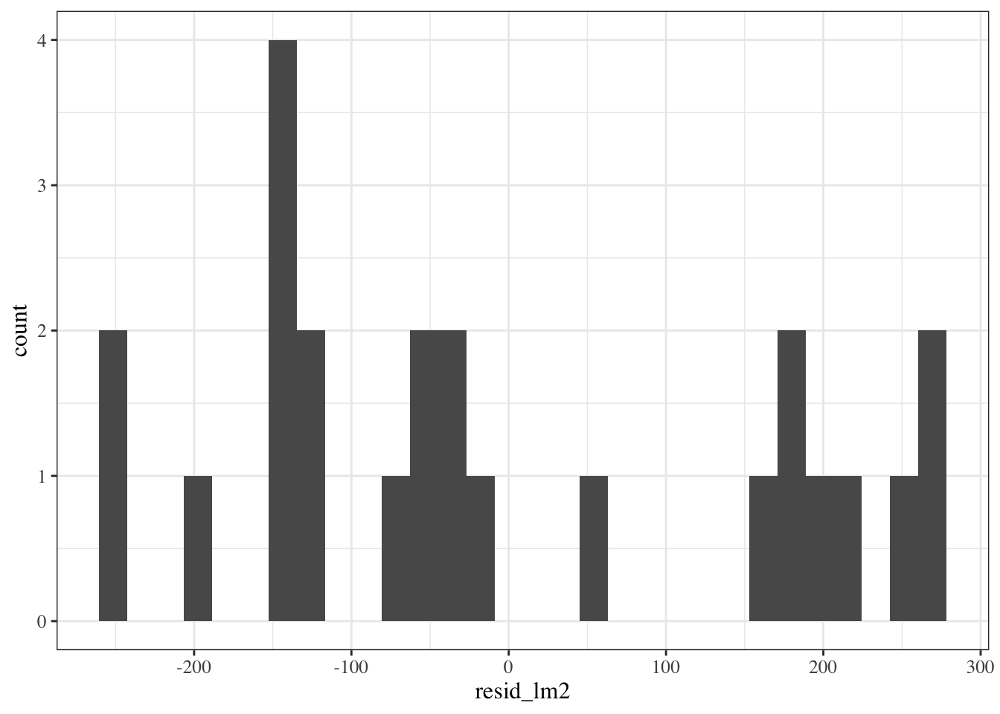
Hard to tell with this small amount of data, but I’m a bit concerned that the histogram doesn’t show a bell-curve shape.
Show R code
std_resid_marginal_hist =
bw |>
ggplot(aes(x = std_resid_lm2)) +
geom_histogram()
print(std_resid_marginal_hist)
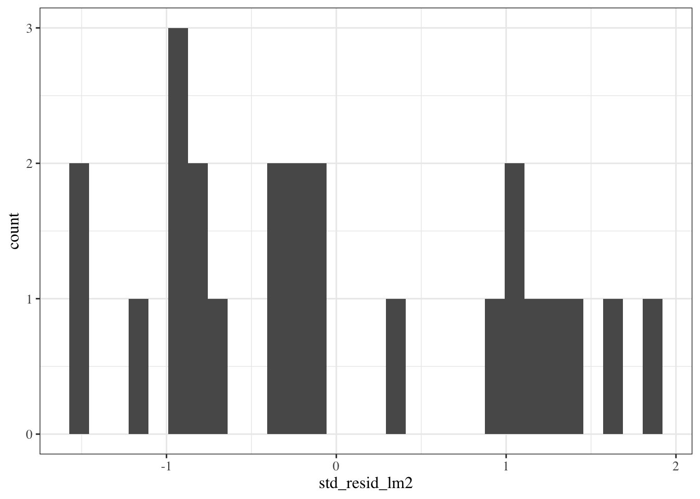
This looks similar, although the scale of the x-axis got narrower, because we divided by \(\hat\sigma\) (roughly speaking).
Still hard to tell if the distribution is Gaussian.
2.8.5 QQ plot of standardized residuals
Another way to assess normality is the QQ plot of the standardized residuals versus normal quantiles:
Show R code
library(ggfortify)
# needed to make ggplot2::autoplot() work for `lm` objects
qqplot_lm2_auto =
bw_lm2 |>
autoplot(
which = 2, # options are 1:6; can do multiple at once
ncol = 1) +
theme_classic()
print(qqplot_lm2_auto)
If the Gaussian model were correct, these points should follow the dotted line.
Fig 2.4 panel (c) in Dobson and Barnett (2018) is a little different; they didn’t specify how they produced it, but other statistical analysis systems do things differently from R.
QQ plot - how it’s built
Let’s construct it by hand:
Show R code
bw = bw |>
mutate(
p = (rank(std_resid_lm2) - 1/2)/n(), # "Blom's method"
expected_quantiles_lm2 = qnorm(p)
)
qqplot_lm2 =
bw |>
ggplot(
aes(
x = expected_quantiles_lm2,
y = std_resid_lm2,
col = sex,
shape = sex)
) +
geom_point() +
theme_classic() +
theme(legend.position='none') + # removing the plot legend
ggtitle("Normal Q-Q") +
xlab("Theoretical Quantiles") +
ylab("Standardized residuals")
# find the expected line:
ps <- c(.25, .75) # reference probabilities
a <- quantile(rstandard(bw_lm2), ps) # empirical quantiles
b <- qnorm(ps) # theoretical quantiles
qq_slope = diff(a)/diff(b)
qq_intcpt = a[1] - b[1] * qq_slope
qqplot_lm2 =
qqplot_lm2 +
geom_abline(slope = qq_slope, intercept = qq_intcpt)
print(qqplot_lm2)
2.8.6 Conditional distributions of residuals
If our Gaussian linear regression model is correct, the residuals \(e_i\) and standardized residuals \(r_i\) should have:
- an approximately Gaussian distribution, with:
- a mean of 0
- a constant variance
This should be true for every value of \(x\).
If we didn’t correctly guess the functional form of linear component of the mean, \[\text{E}[Y|X=x] = \beta_0 + \beta_1 X_1 + ... + \beta_p X_p\]
Then the the residuals might have nonzero mean.
Regardless of whether we guessed the mean function correctly, ther the variance of the residuals might differ between values of \(x\).
Residuals versus fitted values
To look for these issues, we can plot the residuals \(e_i\) against the fitted values \(\hat y_i\) (Figure 2.10).
birthweight model (Equation 2.2): residuals versus fitted values
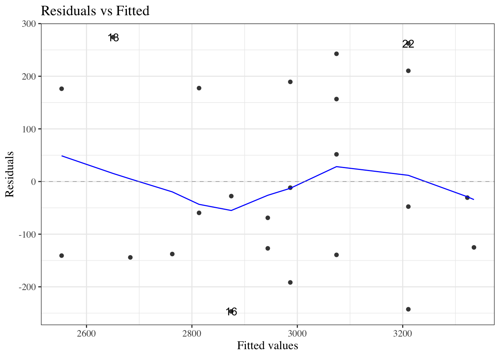
If the model is correct, the blue line should stay flat and close to 0, and the cloud of dots should have the same vertical spread regardless of the fitted value.
If not, we probably need to change the functional form of linear component of the mean, \[\text{E}[Y|X=x] = \beta_0 + \beta_1 X_1 + ... + \beta_p X_p\]
Example: PLOS Medicine title length data
(Adapted from Dobson and Barnett (2018), §6.7.1)
Show R code
data(PLOS, package = "dobson")
library(ggplot2)
fig1 =
PLOS |>
ggplot(
aes(x = authors,
y = nchar)
) +
geom_point() +
theme(legend.position = "bottom") +
labs(col = "") +
guides(col=guide_legend(ncol=3))
fig1
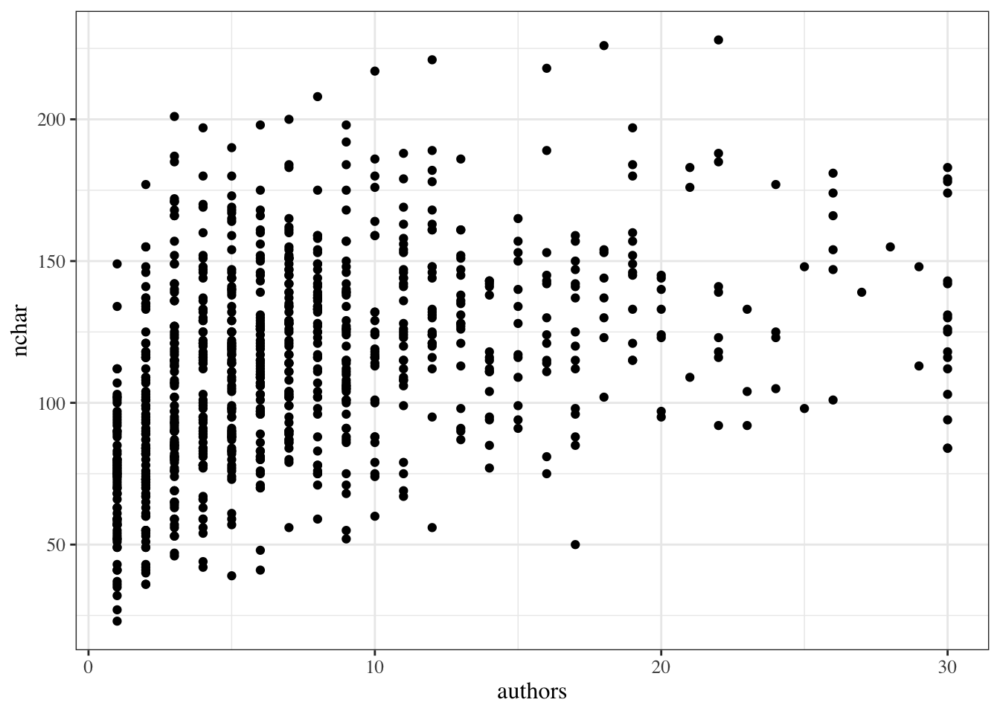
Linear fit
Show R code
lm_PLOS_linear = lm(
formula = nchar ~ authors,
data = PLOS)Show R code
fig2 = fig1 +
geom_smooth(
method = "lm",
fullrange = TRUE,
aes(col = "lm(y ~ x)"))
fig2
library(ggfortify)
autoplot(lm_PLOS_linear, which = 1, ncol = 1)
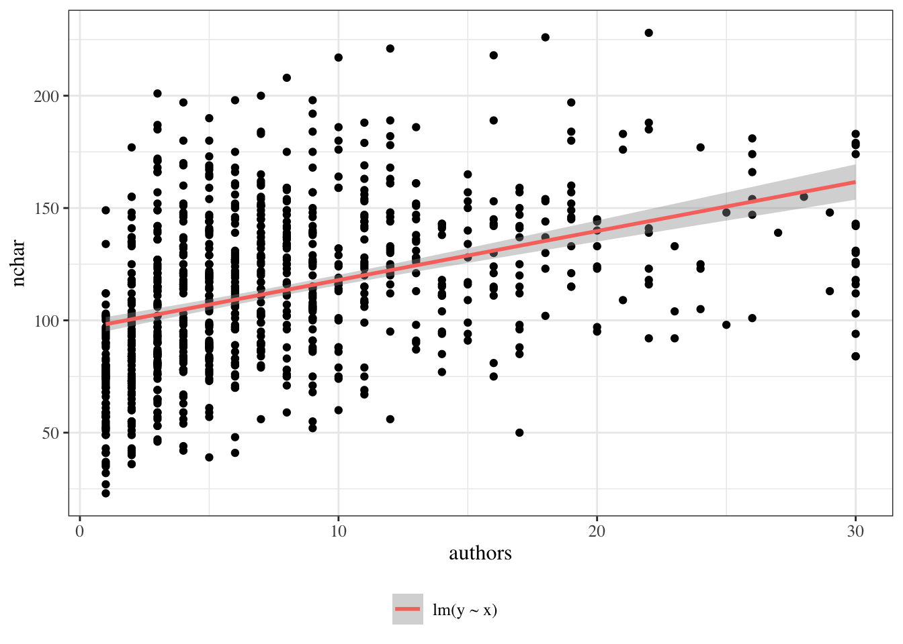

Quadratic fit
Show R code
fig3 =
fig2 +
geom_smooth(
method = "lm",
fullrange = TRUE,
formula = y ~ x + I(x ^ 2),
aes(col = "lm(y ~ x + I(x^2))")
)
fig3
autoplot(lm_PLOS_quad, which = 1, ncol = 1)
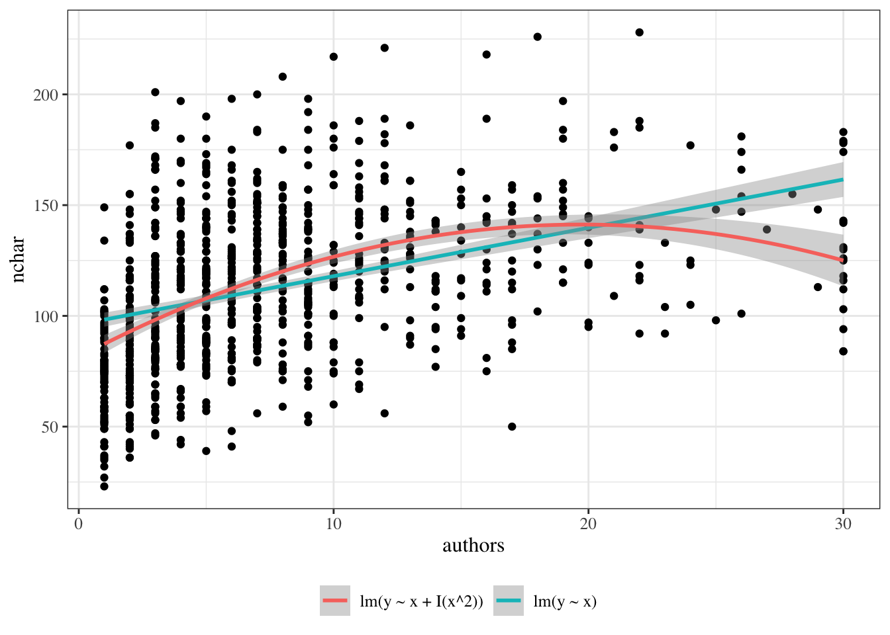
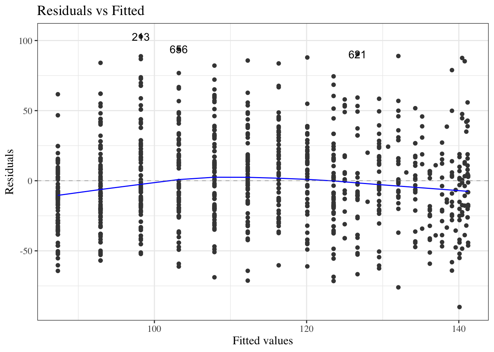
Linear versus quadratic fits
Show R code
PLOS data


Cubic fit
Show R code
fig4 =
fig3 +
geom_smooth(
method = "lm",
fullrange = TRUE,
formula = y ~ x + I(x ^ 2) + I(x ^ 3),
aes(col = "lm(y ~ x + I(x^2) + I(x ^ 3))")
)
fig4
autoplot(lm_PLOS_cub, which = 1, ncol = 1)
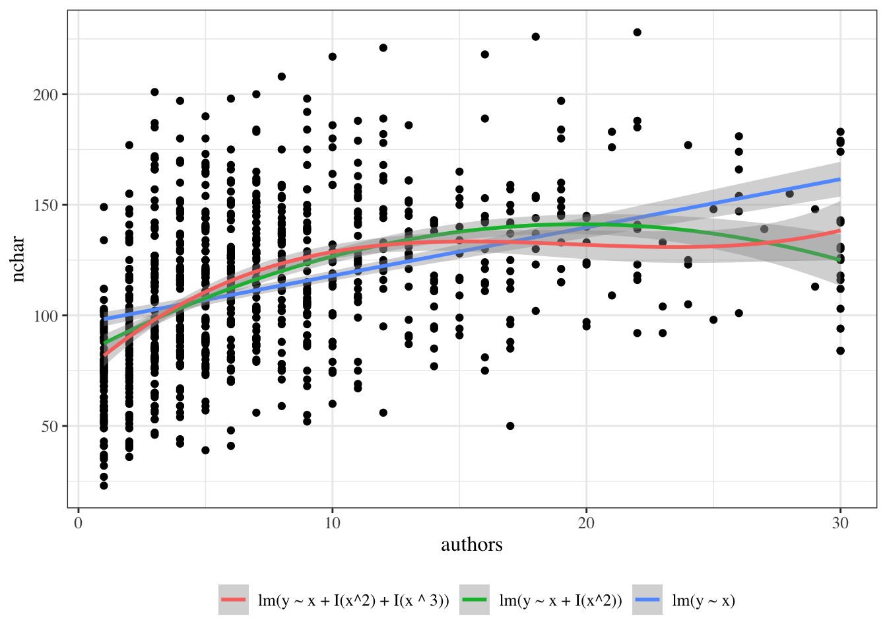

Logarithmic fit
Show R code
fig5 = fig4 +
geom_smooth(
method = "lm",
fullrange = TRUE,
formula = y ~ log(x),
aes(col = "lm(y ~ log(x))")
)
fig5
autoplot(lm_PLOS_log, which = 1, ncol = 1)
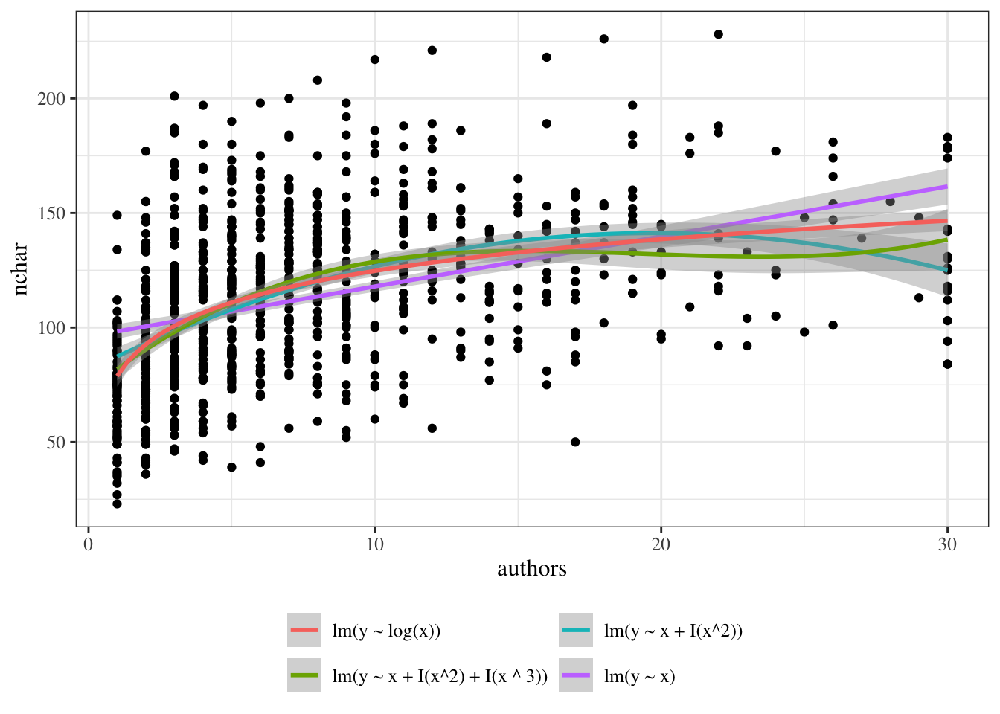
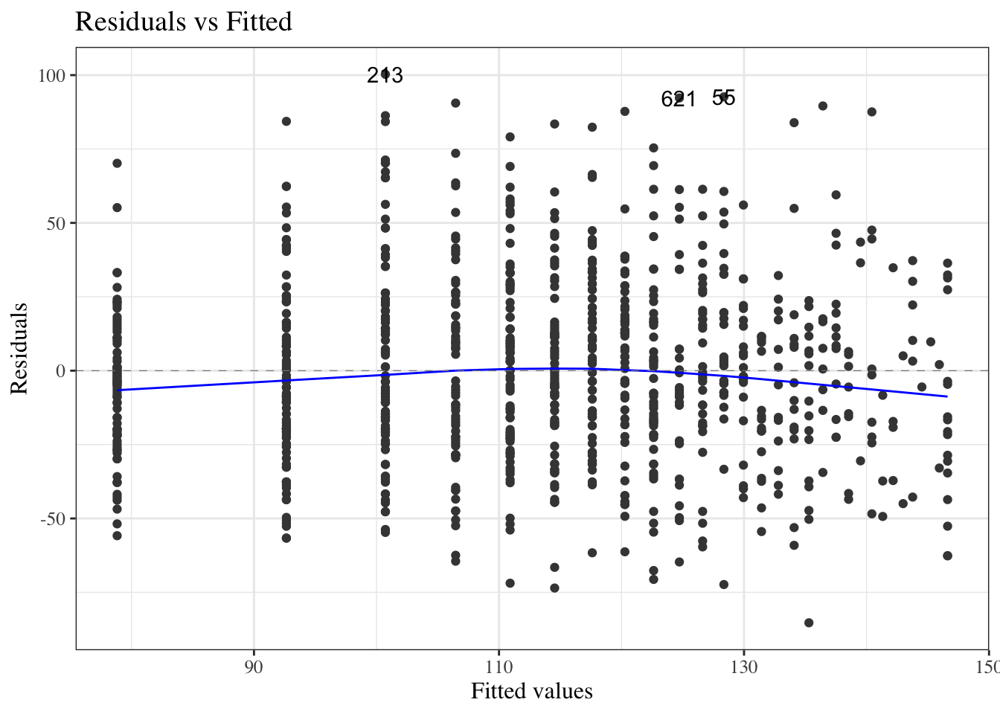
Model selection
Show R code
anova(lm_PLOS_linear, lm_PLOS_quad)| Res.Df | RSS | Df | Sum of Sq | F | Pr(>F) |
|---|---|---|---|---|---|
| 876 | 947501.80 | NA | NA | NA | NA |
| 875 | 880950.24 | 1 | 66551.562 | 66.10205 | 0 |
Show R code
anova(lm_PLOS_quad, lm_PLOS_cub)| Res.Df | RSS | Df | Sum of Sq | F | Pr(>F) |
|---|---|---|---|---|---|
| 875 | 880950.24 | NA | NA | NA | NA |
| 874 | 865932.71 | 1 | 15017.535 | 15.157443 | 0.00010644 |
AIC/BIC
Extrapolation is dangerous
Show R code
fig_all = fig5 +
xlim(0, 60)
fig_all
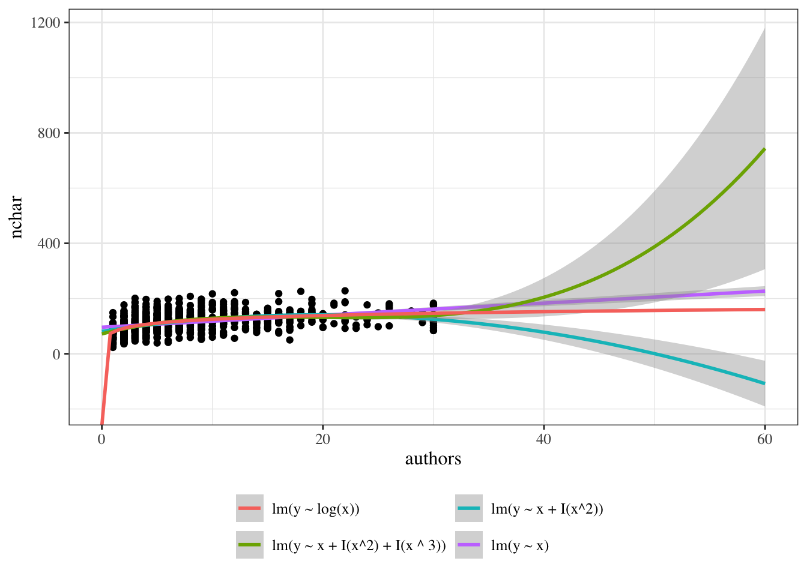
Scale-location plot
We can also plot the square roots of the absolute values of the standardized residuals against the fitted values (Figure 2.18).
birthweight data
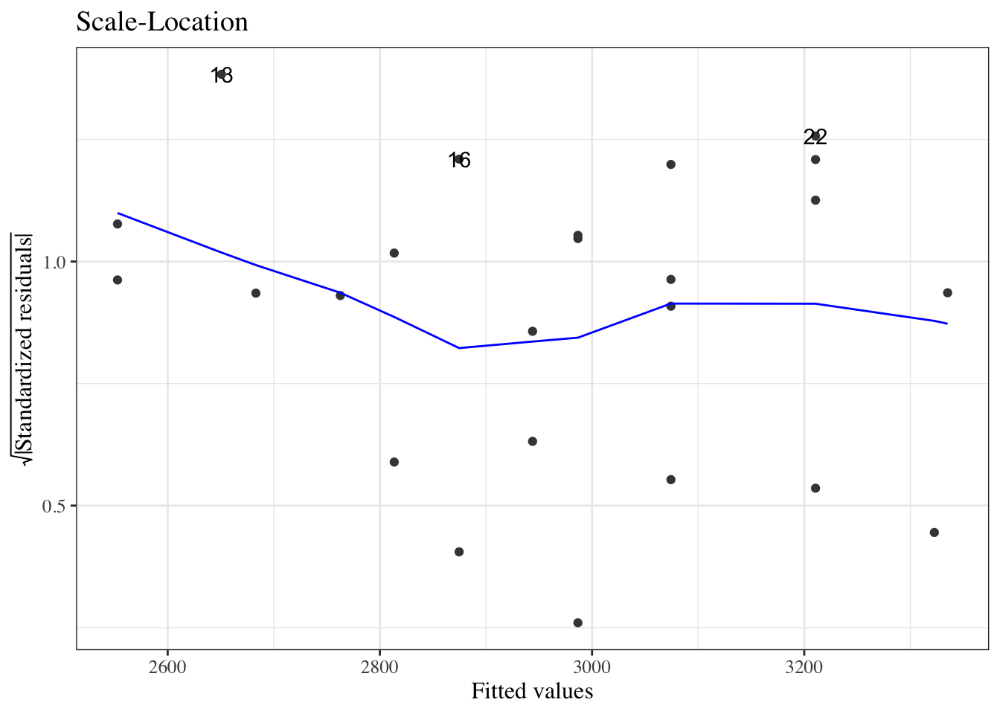
Here, the blue line doesn’t need to be near 0, but it should be flat. If not, the residual variance \(\sigma^2\) might not be constant, and we might need to transform our outcome \(Y\) (or use a model that allows non-constant variance).
Residuals versus leverage
We can also plot our standardized residuals against “leverage”, which roughly speaking is a measure of how unusual each \(x_i\) value is. Very unusual \(x_i\) values can have extreme effects on the model fit, so we might want to remove those observations as outliers, particularly if they have large residuals.
birthweight model with interactions (Equation 2.2): residuals versus leverage
The blue line should be relatively flat and close to 0 here.
2.8.7 Diagnostics constructed by hand
Residuals vs fitted
Show R code
resid_vs_fit = bw |>
ggplot(
aes(x = predlm2, y = residlm2, col = sex, shape = sex)
) +
geom_point() +
theme_classic() +
geom_hline(yintercept = 0)Show R code
print(resid_vs_fit)
Standardized residuals vs fitted
Show R code
bw |>
ggplot(
aes(x = predlm2, y = std_resid, col = sex, shape = sex)
) +
geom_point() +
theme_classic() +
geom_hline(yintercept = 0)
Standardized residuals vs gestational age
Show R code
bw |>
ggplot(
aes(x = age, y = std_resid, col = sex, shape = sex)
) +
geom_point() +
theme_classic() +
geom_hline(yintercept = 0)
sqrt(abs(rstandard())) vs fitted
Compare with autoplot(bw_lm2, 3)
Show R code
bw |>
ggplot(
aes(x = predlm2, y = sqrt_abs_std_resid, col = sex, shape = sex)
) +
geom_point() +
theme_classic() +
geom_hline(yintercept = 0)
2.9 Model selection
(adapted from Dobson and Barnett (2018) §6.3.3; for more information on prediction, see James et al. (2013)).
If we have a lot of covariates in our dataset, we might want to choose a small subset to use in our model.
There are a few possible metrics to consider for choosing a “best” model.
2.9.1 Mean squared error
We might want to minimize the mean squared error, \(\text E[(y-\hat y)^2]\), for new observations that weren’t in our data set when we fit the model.
Unfortunately, \[\frac{1}{n}\sum_{i=1}^n (y_i-\hat y_i)^2\] gives a biased estimate of \(\text E[(y-\hat y)^2]\) for new data. If we want an unbiased estimate, we will have to be clever.
Cross-validation
Show R code
data("carbohydrate", package = "dobson")
library(cvTools)
full_model <- lm(carbohydrate ~ ., data = carbohydrate)
cv_full =
full_model |> cvFit(
data = carbohydrate, K = 5, R = 10,
y = carbohydrate$carbohydrate)
reduced_model = update(full_model,
formula = ~ . - age)
cv_reduced =
reduced_model |> cvFit(
data = carbohydrate, K = 5, R = 10,
y = carbohydrate$carbohydrate)Show R code
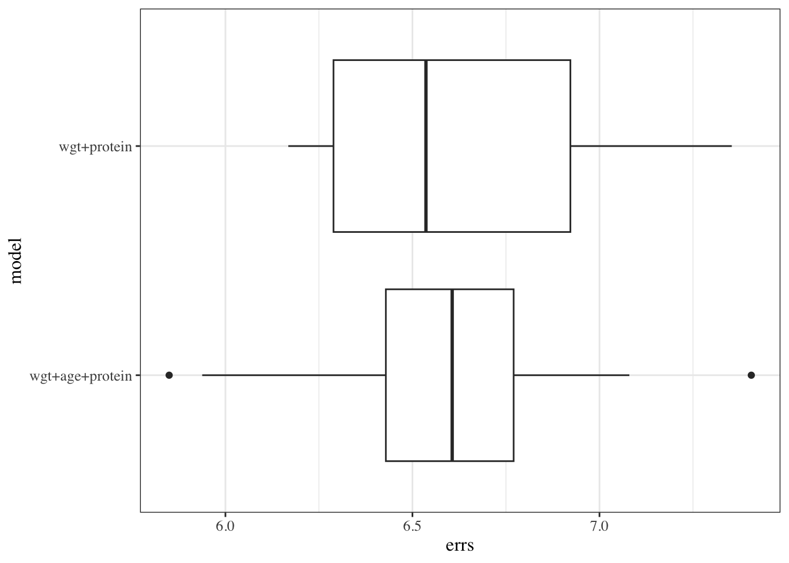
comparing metrics
Show R code
compare_results = tribble(
~ model, ~ cvRMSE, ~ r.squared, ~adj.r.squared, ~ trainRMSE, ~loglik,
"full", cv_full$cv, summary(full_model)$r.squared, summary(full_model)$adj.r.squared, sigma(full_model), logLik(full_model) |> as.numeric(),
"reduced", cv_reduced$cv, summary(reduced_model)$r.squared, summary(reduced_model)$adj.r.squared, sigma(reduced_model), logLik(reduced_model) |> as.numeric())
compare_results| model | cvRMSE | r.squared | adj.r.squared | trainRMSE | loglik |
|---|---|---|---|---|---|
| full | 6.5856636 | 0.48054277 | 0.38314454 | 5.9564191 | -61.836725 |
| reduced | 6.6194799 | 0.44544114 | 0.38019892 | 5.9706238 | -62.490610 |
Show R code
anova(full_model, reduced_model)| Res.Df | RSS | Df | Sum of Sq | F | Pr(>F) |
|---|---|---|---|---|---|
| 16 | 567.66286 | NA | NA | NA | NA |
| 17 | 606.02192 | -1 | -38.359065 | 1.0811788 | 0.31389271 |
stepwise regression
Show R code
library(olsrr)
olsrr:::ols_step_both_aic(full_model)
#>
#>
#> Stepwise Summary
#> -------------------------------------------------------------------------
#> Step Variable AIC SBC SBIC R2 Adj. R2
#> -------------------------------------------------------------------------
#> 0 Base Model 140.773 142.764 83.068 0.00000 0.00000
#> 1 protein (+) 137.950 140.937 80.438 0.21427 0.17061
#> 2 weight (+) 132.981 136.964 77.191 0.44544 0.38020
#> -------------------------------------------------------------------------
#>
#> Final Model Output
#> ------------------
#>
#> Model Summary
#> ---------------------------------------------------------------
#> R 0.667 RMSE 5.505
#> R-Squared 0.445 MSE 35.648
#> Adj. R-Squared 0.380 Coef. Var 15.879
#> Pred R-Squared 0.236 AIC 132.981
#> MAE 4.593 SBC 136.964
#> ---------------------------------------------------------------
#> RMSE: Root Mean Square Error
#> MSE: Mean Square Error
#> MAE: Mean Absolute Error
#> AIC: Akaike Information Criteria
#> SBC: Schwarz Bayesian Criteria
#>
#> ANOVA
#> -------------------------------------------------------------------
#> Sum of
#> Squares DF Mean Square F Sig.
#> -------------------------------------------------------------------
#> Regression 486.778 2 243.389 6.827 0.0067
#> Residual 606.022 17 35.648
#> Total 1092.800 19
#> -------------------------------------------------------------------
#>
#> Parameter Estimates
#> ----------------------------------------------------------------------------------------
#> model Beta Std. Error Std. Beta t Sig lower upper
#> ----------------------------------------------------------------------------------------
#> (Intercept) 33.130 12.572 2.635 0.017 6.607 59.654
#> protein 1.824 0.623 0.534 2.927 0.009 0.509 3.139
#> weight -0.222 0.083 -0.486 -2.662 0.016 -0.397 -0.046
#> ----------------------------------------------------------------------------------------Lasso
\[\arg min_{\theta} \ell(\theta) + \lambda \sum_{j=1}^p|\beta_j|\]
Show R code
autoplot(fit, xvar = 'lambda')
Show R code
coef(cvfit, s = "lambda.1se")
#> 4 x 1 sparse Matrix of class "dgCMatrix"
#> s1
#> (Intercept) 34.10901486
#> age .
#> weight -0.10406131
#> protein 0.944061112.10 Categorical covariates with more than two levels
2.10.1 Example: birthweight
In the birthweight example, the variable sex had only two observed values:
Show R code
unique(bw$sex)
#> [1] female male
#> Levels: female maleIf there are more than two observed values, we can’t just use a single variable with 0s and 1s.
2.10.2
For example, Table 2.12 shows the (in)famous iris data (Anderson (1935)), and Table 2.13 provides summary statistics. The data include three species: “setosa”, “versicolor”, and “virginica”.
Show R code
irisiris data
iris data
| setosa (N=50) |
versicolor (N=50) |
virginica (N=50) |
|
|---|---|---|---|
| Sepal.Length | |||
| Mean (SD) | 5.01 (0.352) | 5.94 (0.516) | 6.59 (0.636) |
| Median [Min, Max] | 5.00 [4.30, 5.80] | 5.90 [4.90, 7.00] | 6.50 [4.90, 7.90] |
| Sepal.Width | |||
| Mean (SD) | 3.43 (0.379) | 2.77 (0.314) | 2.97 (0.322) |
| Median [Min, Max] | 3.40 [2.30, 4.40] | 2.80 [2.00, 3.40] | 3.00 [2.20, 3.80] |
| Petal.Length | |||
| Mean (SD) | 1.46 (0.174) | 4.26 (0.470) | 5.55 (0.552) |
| Median [Min, Max] | 1.50 [1.00, 1.90] | 4.35 [3.00, 5.10] | 5.55 [4.50, 6.90] |
| Petal.Width | |||
| Mean (SD) | 0.246 (0.105) | 1.33 (0.198) | 2.03 (0.275) |
| Median [Min, Max] | 0.200 [0.100, 0.600] | 1.30 [1.00, 1.80] | 2.00 [1.40, 2.50] |
If we want to model Sepal.Length by species, we could create a variable \(X\) that represents “setosa” as \(X=1\), “virginica” as \(X=2\), and “versicolor” as \(X=3\).
Show R code
data(iris) # this step is not always necessary, but ensures you're starting
# from the original version of a dataset stored in a loaded package
iris =
iris |>
tibble() |>
mutate(
X = case_when(
Species == "setosa" ~ 1,
Species == "virginica" ~ 2,
Species == "versicolor" ~ 3
)
)
iris |>
distinct(Species, X) |>
print()
#> # A tibble: 3 × 2
#> Species X
#> <fct> <dbl>
#> 1 setosa 1
#> 2 versicolor 3
#> 3 virginica 2Then we could fit a model like:
Show R code
iris_lm1 = lm(Sepal.Length ~ X, data = iris)
iris_lm1 |> parameters() |> print_md()| Parameter | Coefficient | SE | 95% CI | t(148) | p |
|---|---|---|---|---|---|
| (Intercept) | 4.91 | 0.16 | (4.60, 5.23) | 30.83 | < .001 |
| X | 0.47 | 0.07 | (0.32, 0.61) | 6.30 | < .001 |
2.10.3 Let’s see how that model looks:
Show R code
iris_plot1 = iris |>
ggplot(
aes(
x = X,
y = Sepal.Length)
) +
geom_point(alpha = .1) +
geom_abline(
intercept = coef(iris_lm1)[1],
slope = coef(iris_lm1)[2]) +
theme_bw(base_size = 18)Show R code
ggplotly(iris_plot1)We have forced the model to use a straight line for the three estimated means. Maybe not a good idea?
2.10.4 Let’s see what R does with categorical variables by default:
Show R code
iris_lm2 = lm(Sepal.Length ~ Species, data = iris)
iris_lm2 |> parameters() |> print_md()| Parameter | Coefficient | SE | 95% CI | t(147) | p |
|---|---|---|---|---|---|
| (Intercept) | 5.01 | 0.07 | (4.86, 5.15) | 68.76 | < .001 |
| Species (versicolor) | 0.93 | 0.10 | (0.73, 1.13) | 9.03 | < .001 |
| Species (virginica) | 1.58 | 0.10 | (1.38, 1.79) | 15.37 | < .001 |
2.10.5 Re-parametrize with no intercept
If you don’t want the default and offset option, you can use “-1” like we’ve seen previously:
Show R code
iris.lm2b = lm(Sepal.Length ~ Species - 1, data = iris)
iris.lm2b |> parameters() |> print_md()| Parameter | Coefficient | SE | 95% CI | t(147) | p |
|---|---|---|---|---|---|
| Species (setosa) | 5.01 | 0.07 | (4.86, 5.15) | 68.76 | < .001 |
| Species (versicolor) | 5.94 | 0.07 | (5.79, 6.08) | 81.54 | < .001 |
| Species (virginica) | 6.59 | 0.07 | (6.44, 6.73) | 90.49 | < .001 |
2.10.6 Let’s see what these new models look like:
Show R code
ggplotly(iris_plot2)2.10.7 Let’s see how R did that:
Show R code
formula(iris_lm2)
#> Sepal.Length ~ Species
model.matrix(iris_lm2) |> as_tibble() |> unique()| (Intercept) | Speciesversicolor | Speciesvirginica |
|---|---|---|
| 1 | 0 | 0 |
| 1 | 1 | 0 |
| 1 | 0 | 1 |
This is called a “corner point parametrization”.
Show R code
formula(iris.lm2b)
#> Sepal.Length ~ Species - 1
model.matrix(iris.lm2b) |> as_tibble() |> unique()| Speciessetosa | Speciesversicolor | Speciesvirginica |
|---|---|---|
| 1 | 0 | 0 |
| 0 | 1 | 0 |
| 0 | 0 | 1 |
This can be called a “group point parametrization”.
There are more options; see Dobson and Barnett (2018) §6.4.1 and the codingMatrices package vignette (Venables (2023)).